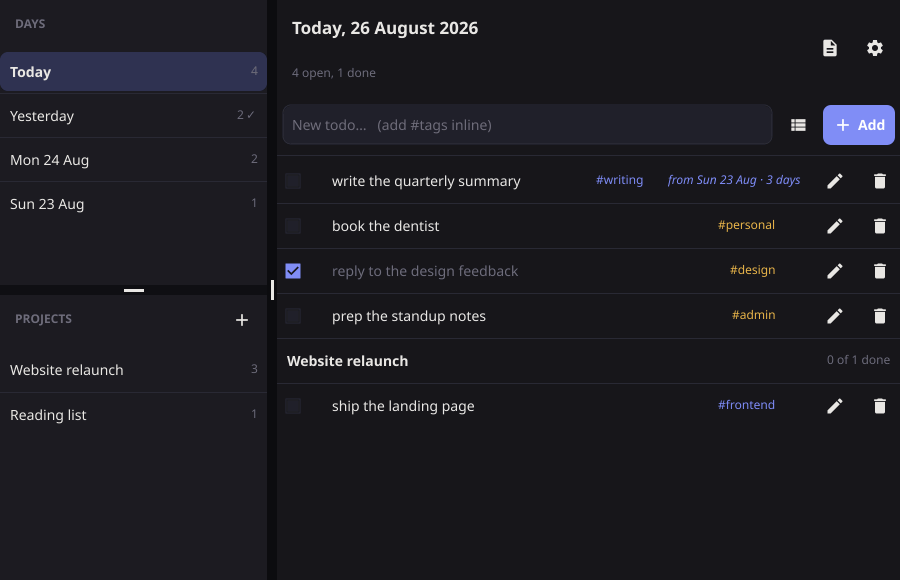

todo
A single-binary todo list built around one idea: unfinished work rolls forward to today, and the day it came from keeps an honest record.
| Role | Sole designer and engineer |
|---|---|
| Built with | Go 1.22, Fyne v2 |
| Platforms | Linux, macOS, Windows — one JSON file, no server |
| Source | github.com/AkiraVD → |

The problem
Most todo apps let a task sit in a list until you deal with it, and tell you nothing about how long it sat there. The one fact that would change your behaviour — this is the fourth day — is what the data model throws away.
Where the data model earns its keep
A gap produces one entry, not a pile
Rollover runs at launch and again at midnight. A three-day gap produces one new entry, and carried records are frozen history — only the live copy can be ticked off.
Title belongs to the task; date belongs to the entry
Editing a title rewrites the whole chain. Changing a date moves only that record. On a carried record the date field is omitted entirely — history stays where it happened.
Projects are a backlog, so they skip rollover
A project todo sits under its project until done, without a trail of carried records — but still appears in every weekly report from the week it was written, so nothing quietly rots.
Validation that refuses without collateral damage
A bad or colliding date is refused with a reason, and nothing else about the todo changes. Partial writes are the bug this design exists to avoid.
What I’d change
[A limitation and how you’d address it.]